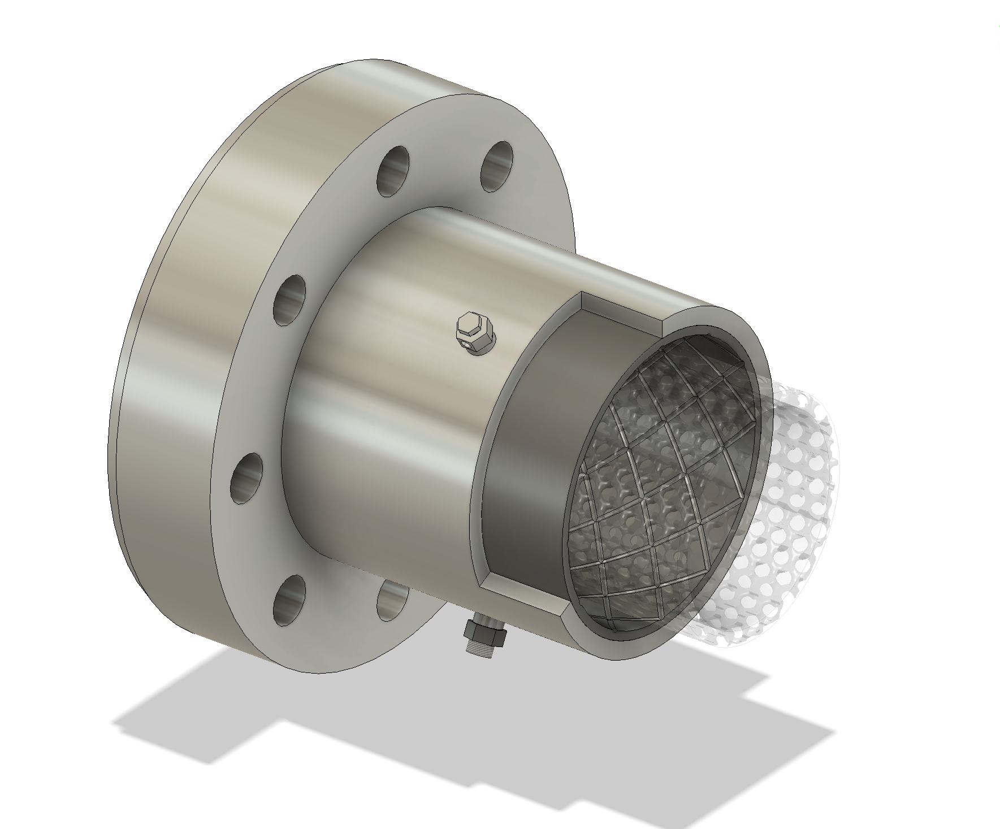

HuLC TIDAL
TIDAL (Tracking and Intervention for Detected Active Leaks) is the University of Illinois entry to NASA's Human Lander Challenge 2026: a sectional lunar pipeline that detects, isolates, and mitigates leaks while transferring cryogenic fluids between surface assets. My work was the capillary action collar, the junction hardware that passively captures and locates a leak.
The challenge: lunar pipelines run through abrasive dust and deep cryogenic temperatures, and junction leaks are hard to find, so the priority is preserving fluids like liquid oxygen, hydrogen, and water. This page covers the collar; TIDAL's detection algorithms, temperature sensing, dust mitigation, and autonomy were handled by other sub-teams.
My role: One of the main CAD engineers on the capillary action collar (the housing, clamshell flanges, aluminum mesh capillary ring, internal cavity, and sensor/outlet layout), and I helped build the leak-capture animation in the proposal video.

Capillary Action Collar · Leak isolation
TIDALThe problem: junction interfaces in cryogenic pipelines carry high stress concentrations, so micro-cracks tend to form there first. They leak slowly at the start, but that early leakage speeds up crack growth and fluid loss. On the Moon, where fluid production is limited and resupply is scarce, both the lost fluid and shutting down a line to find the leak are costly.
Overview
TIDAL manages leaks in three stages (detect, isolate, mitigate), and the capillary action collar handles isolation. It is a fully external, passive part that clamps around a junction and never touches the flow inside. When a leak starts, the collar catches the escaping fluid before it sprays out, uses capillary pressure to slow or stop it, and gives the system a way to locate the crack, all with no power, since capture relies on surface tension in the mesh.
How the collar works
The collar is a split aluminum clamshell shaped to the junction interface. Vertical flanges bolt the two halves together and clamp it onto the coupler, forming a sealed enclosure around the outside of the junction.
- Annular cavity and capillary medium. A ring-shaped cavity surrounds the leak-prone region and holds a ring of aluminum mesh pressed against the pipe wall. Fluid from a micro-crack is caught at the wall and wicked into the cavity instead of spreading out.
- Guided channels and outlet tube. Shallow engraved channels in the cavity walls route captured liquid to a single outlet tube, which can vent to relieve pressure or feed a recovery line.
- Two pressure sensors. Cryogenic sensors near the top and bottom of the cavity read a pressure difference during a leak, which locates the crack along the junction.

Why capillary action isolates the leak
Escaping fluid first reaches the porous aluminum mesh, and surface tension pulls it in instead of letting it spray out, the capillary action the collar is named for. Aluminum is used for its very low wettability with liquid oxygen, which is what lets capillary forces move the fluid through the mesh (NASA has already tested capillary action with liquid oxygen in liquid-acquisition devices).
The capillary pressure the mesh holds back follows the Young-Laplace relation:
Pc = 2γ·cos(α) / deff
With the proposal's liquid-oxygen values (γ = 0.0132 N/m, α = 10°, effective crack width 3.58 µm), that gives a back-pressure of about 7.26 kPa. At a 10 kPa line pressure the collar drops the leak velocity from about 4.30 m/s to 2.25 m/s (roughly a 41.9% reduction in leak rate), and any junction running below ~7.2 kPa has its leak stopped completely, without the mesh breaking down.
The collar also pinpoints the leak: sitting in thermal equilibrium with the environment, fluid entering the cavity meets a warmer surface and partially flash-vaporizes, and the two sensors read the resulting pressure rise differently depending on where the crack is.
CAD and components
I did a large share of the collar's CAD: the housing, clamshell flanges, mesh capillary ring, internal cavity, and the placement of the sensors and outlet. This is the assembly used in the proposal figures and animation. The hardware and geometry were my focus; detection, sensing, dust mitigation, and autonomy were handled by other sub-teams.